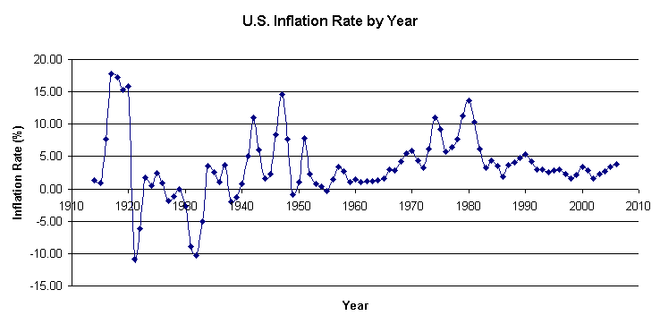
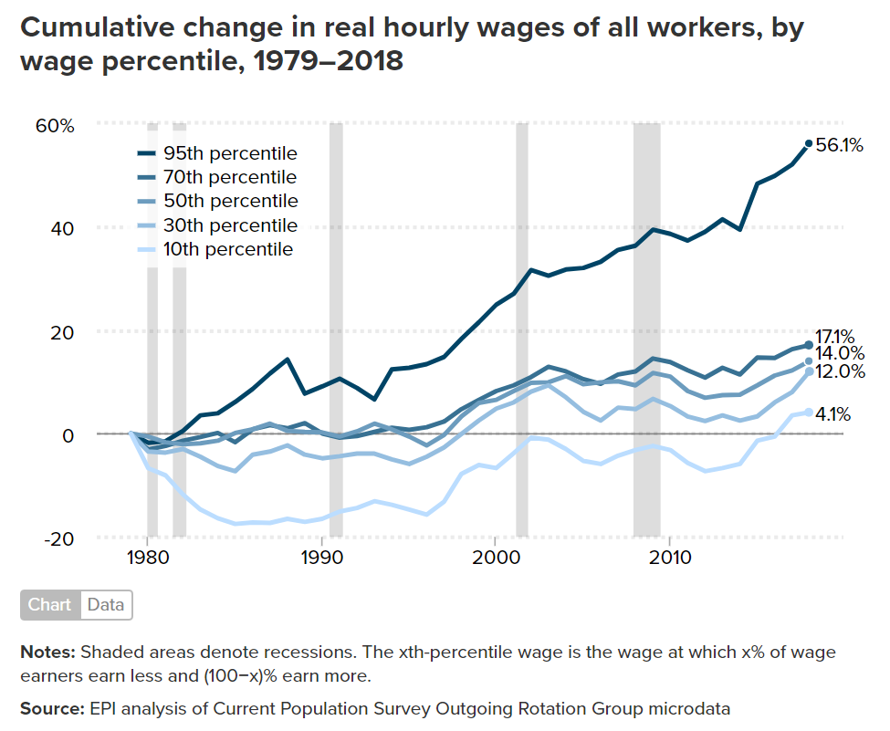

Inflation (in the context of this website) is the devaluation of currency over time as the United States Government prints money. As more paper money enters circulation, this creates more supply and devalues the currency. Inflation is not necessarily bad as it helps boost consumer demand and consumption, driving the economy.
Wages are the monetary value of an individual’s work over a period of time. For example, more skilled work has a higher value for the same period of time than less skilled work. A Data Scientist is considered highly skilled and there is a lot of demand with not a lot of data scientists. So, they are paid highly. A fast food worker is not considered highly skilled as many people could perform the job. Therefore, they are paid much less and might be paid minimum wage.
Inflation is measured by the U.S. Bureau of Labor Statistics (BLS) who reports the Consumer Price Index (CPI) on a monthly basis and has calculated it as far back as 1913. Consumer Price Index is calculated by averaging the cost of products people need to live. The categories include; food, energy, housing, transportation, apparel, and medical expenses. Inflation is just the change in the Consumer Price Index. See the image below:

(Creative Commons License)(url)
As you can see, inflation has been pretty steady since the middle of the 1980s. Recently, inflation was measured at 7.9%. This would rival the 1980 inflation rate, over 40 years ago.
Lets now investigate how wages have changed over time. We can look at cumulative wages since the 1980s:

(Creative Commons License)(url)
In this graph we can see what average yearly change in wage growth for each percentile by dividing each by 39 years. Below you can see the percentile growth over time:
| Percentile | Average Year Growth |
|---|---|
| 95th | 1.44% |
| 70th | 0.44% |
| 50th | 0.36% |
| 30th | 0.31% |
| 10th | 0.10% |
Obviously, this does not seem to keep up with our previous inflation graphic.
{kind=link}